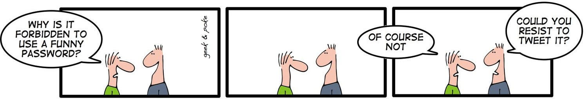

Software gets hacked, data breaches happen, data is leaked. It’s not a rare exception but happens all the time. We need to acknowledge that software is not perfect. This is where the concept of defense in depth comes into play.
Defense in depth means we don’t rely on a single security mechanism, but have multiple layers of security instead.
Password hashing is a prime example of defense in depth. If our database is secure, we don’t need password hashing. We hope it is the case and defend the database as well as possible, but we prepare for the worst case. We prepare for an attacker getting access to our users’ login credentials.
A key idea of privacy comes into play: You don’t have to worry about data you don’t have. In the case of passwords, we don’t store the passwords. Not even an encrypted version. We store a hashed version.
This way, the effect is hopefully limited to our service. We need to tell the users that their accounts and data might have been exposed, but at least nobody will use the same username/password combination to log into their bank/Amazon/social media accounts.
What is Hashing?
Hashing is like cooking. Given the recipe (the hashing algorithm) and the ingredients (the password), you can always get the same result. Just given the result (the hash), it is virtually impossible to reverse the process (figure out the password).
There are non-cryptographic hashing functions and cryptographic ones. Password hashing functions are additionally designed to be hard to compute. This means they take a lot of CPU power/time to apply. This is on purpose. If you need a few milliseconds to apply it on your (weak) server, the attacker hopefully also needs quite a while to apply it billions of times on huge dictionaries to crack the hashed passwords with brute force.
Photo by American Heritage Chocolate on Unsplash
Why it Matters
There are so many leaks that it is hard to keep track of them.
- 2012: LinkedIn leaked 6.5 million passwords. The passwords had been hashed with SHA-1 and were not salted (source).
- 2013: Adobe leaked 130 million passwords (source). The passwords were encrypted, not hashed.
- 2016: The full data of the 2012 LinkedIn breach (about 117 million email/password hash pairs, weakly hashed) was published (source)
- 2019: 1.2 million passwords got leaked via the porn site Luscious (source)
- 2019: Facebook had hundreds of millions of passwords stored in plain text (source 1, source 2)
- 2019: Zynga leaked 170 million passwords (source). Zynga used hashing and salting.
You can see if you might have been affected by haveibeenpwned.com.
Salt — because hashing is not enough
When credentials are leaked, it essentially is a big table with usernames and the (hopefully) hashed passwords. If the same algorithm is applied to all passwords without a salt, you can see which users have the same passwords. Extra information such as the user names, the usage of the platform, or other attacks such as phishing might lead to information about those passwords.
To counter such password cracking attacks, a string is added to the password. This string is randomly generated for each user. The string is stored next to the hashed password. The only reason to have that string is to make the same plaintext password have different hash values.
How can I hash passwords?
Computing a key from a password which then can be stored now got quite a bit more complex: We need the password, a hashing function, a random salt per user, and sometimes even a number of rounds to hash. There are a lot of possibilities to get it wrong. Also, what do you do to migrate from one hashing function to another? What do you do to increase the number of rounds as hardware becomes better?
You for sure don’t want to always force users to enter a new password. You want to be able to let users migrate over time.
A key derivation function as implemented in Python's werkzeug package with adjustable computational difficulty like PBKDF2 is your friend. It’s a function that takes the password, the hashing function, the salt, the number of rounds. It returns the key. In most programming languages, you have two functions:
def generate_key(password, hash_function, salt_length) -> key:
...
def check_key(password, key) -> bool:
...
As an example:
>>> from werkzeug.security import generate_password_hash as gen_key
>>> key = gen_key("foobar", "pbkdf2:sha512:1000", salt_length=8)
>>> key
'pbkdf2:sha512:1000$qc8Q9uqK$4f28daacb10dea6667e00c866607073b7a740817e8c4a267c1cedd05cf36cbdf609b14cf446d73d76819f37a3e0475160d444a4fab39526e72aca611960e4c77'
>>> from werkzeug.security import check_password_hash as check_key
>>> check_key(key, "foobar")
True
Please note that 1000 iterations are far too few today. The OWASP Password Storage Cheat Sheet recommends at least 210,000 iterations for PBKDF2-HMAC-SHA512, and Werkzeug uses scrypt by default nowadays.
You can see that the first part of the method contains all the parameters necessary for the method. This means it is easy to extend. The second part (delimited by the dollar sign) is the 8 characters of the salt. Then comes the hash of the password with the given method and salt.
There are other key derivation functions. Most notably scrypt, which was not only designed to be demanding on the CPU but also requires a lot of memory. For Python, there is passlib which offers a lot of hashing functions and key derivation functions. However, it doesn’t seem to be too widespread (source). Instead, you can create something similar on your own by using core Python functions such as hashlib.scrypt. Argon2 (Argon2id) is the first choice of the OWASP Password Storage Cheat Sheet.
Common Mistakes
Let’s make a checklist. If you are a developer, I hope you can checkmark those:
- ☑ I don’t store passwords in plain text.
- ☑ I don’t use encryption for passwords.
- ☑ I don’t use a non-cryptographic hashing function (e.g. CRC-32).
- ☑ I don’t use a weak cryptographic hashing function (e.g. MD5, SHA-1).
- ☑ I use a different, randomly calculated salt for each user for calculating the hashes.
As a user, I hope you can checkmark the following points:
- ☑ I don’t reuse passwords. Ever.
- ☑ I don’t share my passwords.
- ☑ I don’t use weak passwords.
- ☑ I make sure I don’t leak my secrets.
- ☑ I am aware of phishing. (If you are not — a blog post will follow 😀)
As a developer, you can prevent some user mistakes with a password policy. For example, making it mandatory to have at least 8 characters and maybe running the password through a simple dictionary attack before you allow it. I wouldn’t put password rules up, though. XKCD 936 explains why.

Image by Oliver Widder (Geek and Poke)What can I do as a user?
As a user, you should use different passwords for different services. The passwords should also not be weak (e.g. guessable). This combination makes it impossible for me to memorize all of them. I have only a handful of strong passwords I memorize. For the rest, I need to use a password manager. The password manager can then suggest strong passwords as well.
A strong password has high entropy. This means:
- At least 8 characters. Let’s rather be safe and have at least 10 characters.
- A rich character set (e.g. upper- and lower-case letters, digits, special characters)
- Is not a combination of only two or three words in a dictionary
You can also change your passwords if you suspect that they have been compromised. Changing passwords regularly without a reason is no longer recommended: NIST SP 800-63B advises to change passwords only when there is evidence of compromise.
See also
It feels like Tom Scott / Computerphile made a video about all the security topics I want to write about 😄
More in this series
In this series about application security (AppSec), we already explained some of the techniques of the attackers 😈 and also techniques of the defenders 😇:
- Part 1: SQL Injections 😈🐝
- Part 2: Don’t leak Secrets 😇
- Part 3: Cross-Site Scripting (XSS) 😈🐝
- Part 4: Password Hashing 😇
- Part 5: ZIP Bombs 😈
- Part 6: CAPTCHA 😇
- Part 7: Email Spoofing 😈
- Part 8: Software Composition Analysis (SCA) 😇
- Part 9: XXE attacks 😈🐝
- Part 10: Effective Access Control 😇
- Part 11: DoS via a Billion Laughs 😈
- Part 12: Full Disk Encryption 😇
- Part 13: Insecure Deserialization 😈🐝
- Part 14: Docker Security 😇
- Part 15: Credential Stuffing 😈🐝
- Part 16: Multi-Factor Authentication (MFA/2FA) 😇
- Part 17: ReDoS 😈
The following articles are about to come:
- Part 18: Secure Messaging 😇
- Part 19: Cryptojacking 😈
- Part 20: Backups 😇
- Part 21: Cryptotrojans 😈
- Part 22: Single-Sign-On 😇
- Part 23: Clipboard Hijacking 😈
- Part 24: Certificates 😇
- Part 25: Race Condition Attacks in Blockchains 😈
- Part 26: Mobile Device Management (MDM) 😇
- Part 27: Server-Side Request Forgery (SSRF) 😈
- Part 28: Network Separation 😇
- Part 29: Social Engineering (including Phishing) 😈
- Part 30: Virtual Private Networks (VPNs) 😇
- Part 31: CSRF 😈
Let me know if you are interested in more articles around AppSec / InfoSec!